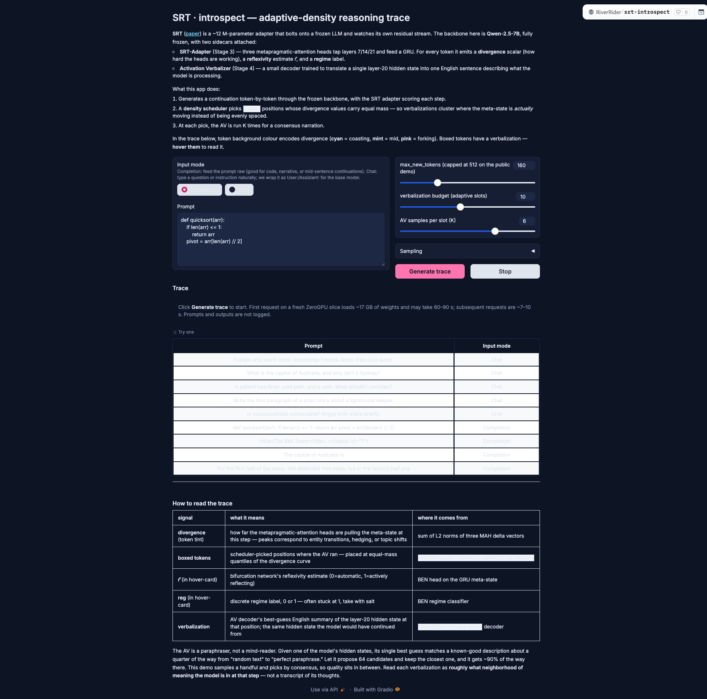

SRT-introspect: Example Trace
This is a static HTML mockup for sharing screenshots and narration of the SRT-introspect demo. All images are local; no live backend required.
Prompt
def quicksort(arr):
if len(arr) <= 1:
return arr
pivot = arr[len(arr) // 2]
if len(arr) <= 1:
return arr
pivot = arr[len(arr) // 2]
Trace Output

Figure 1. The trace: colored tokens show divergence, boxed tokens are narrated by the sidecar.
Verbalization Tooltip

Figure 2. Hovering a boxed token reveals the AV narration (here, a LeetCode-style paraphrase).
Pinboard

Figure 3. The Pinboard: click any boxed token to pin its narration for side-by-side comparison.
App Overview

Figure 4. The app on first load: prompt textbox, sampling sliders, and empty trace pane.